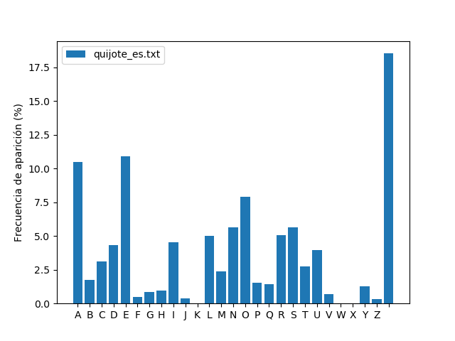
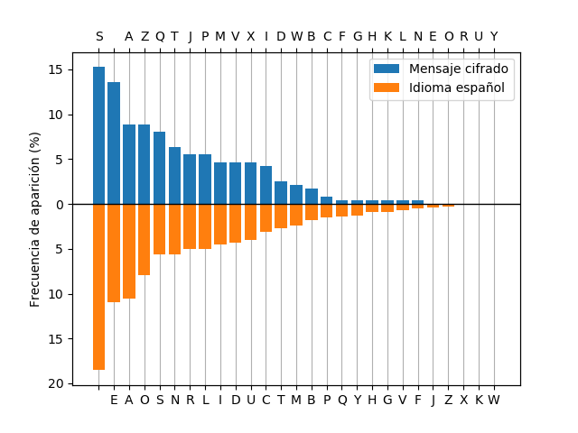
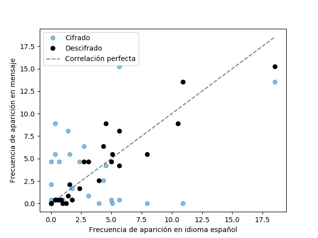

Análisis criptográfico de texto¶
Se tiene una serie de mensajes cifrados los cuales se quieren descifrar. Gracias a nuestro servicio de inteligencia sabemos que la técnica de cifrado utilizada es la siguiente. Los mensajes sólo contienen caracteres de la A a la Z y espacios entre palabras, no se utilizan signos diacríticos (acentos o la virgulilla de la Ñ) ni signos de puntuación. A todos estos caracteres se les asigna un número entero del 0 al 26 de acuerdo a la siguiente tabla:
| Letra | A | B | C | D | E | F | G | H | I | J | K | L | M | N | O | P | Q | R | S | T | U | V | W | X | Y | Z | Espacio |
| Equivalente numérico | 0 | 1 | 2 | 3 | 4 | 5 | 6 | 7 | 8 | 9 | 10 | 11 | 12 | 13 | 14 | 15 | 16 | 17 | 18 | 19 | 20 | 21 | 22 | 23 | 24 | 25 | 26 |
Luego cada equivalente numérico (P) del mensaje original es convertido a otro entero (C) mediante la transformación afín:
$$C \equiv a P + b \quad (mod 27)$$
donde ‘a’ y ‘b’ son las “claves” utilizadas. Finalmente, los nuevos números se convierten a caracteres utilizando la misma tabla. Observar que la expresión anterior es una congruencia, por lo tanto si el entero resultante luego de hacer aP + b es mayor o igual a 27 (la cantidad de caracteres con los cuales se trabaja), se utiliza el caracter de la tabla tal que su equivalente numérico sea congruente módulo 27 con el valor obtenido. Por otro lado, para que cada caracter se cifre a un caracter diferente, es necesario que el entero utilizado como clave ‘a’ sea coprimo con 27, es decir, que su único común divisor sea 1.
- Realice un programa que acepte como argumento el nombre del archivo con el mensaje cifrado y el valor de las claves ‘a’ y ‘b’ e imprima en pantalla el mensaje descifrado.
Nuestros espías han descubierto las claves utilizadas para cifrar el mensaje del archivo mensaje_cifrado_00.txt. Puede utilizar este mensaje para comprobar su algoritmo. Las claves descubiertas son
a = 7, b = 25
Suponiendo que su programa se llama descifrar.py un ejemplo de su invocación puede ser (python corresponde a python3):
$ python descifrar.py mensaje_cifrado_00.txt 7 25
Desafortunadamente, para los siguientes mensajes no se tienen sus claves de cifrado. Se le pide por lo tanto que realice un algoritmo que vulnere al sistema y las descubra. Para ello tenga en cuenta la siguiente observación: como cada caracter se transforma siempre al mismo caracter cifrado, puede comparar su frecuencia de ocurrencia con las de un texto ordinario para hallar una correspondencia.
Se le pide que:
- Realice un programa que calcule la frecuencia de aparición de cada caracter en el texto de un archivo que se le pase como argumento y guarde la distribución calculada en otro archivo. Para ello quite del texto los signos diacríticos de todas las letras y omita los signos de puntuación y caracteres especiales, exceptuando el caracter de espacio que sí deberá incluir en la distribución ya que este caracter se encuentra en los mensajes cifrados. El programa deberá generar una figura similar a la siguiente:

Utilice este programa para generar la distribución de frecuencia de aparición de letras en el idioma español utilizando el primer capítulo de la novela “Don Quijote de la Mancha”, el cual puede encontrar en el archivo quijote_es.txt.
Nos ha llegado la información de que los textos cifrados pueden estar en otros idiomas además del español. Para ello, nuestros agentes le han conseguido traducciones de este capítulo en varios idiomas diferentes. Genere la distribución de frecuencia de aparición de letras para el idioma inglés, alemán y finlandés utilizando el texto en los archivos quijote_en.txt, quijote_de.txt y quijote_fi.txt, respectivamente. Tenga en cuenta que estos idiomas pueden poseer signos diacríticos diferentes a los del español.
Para descifrar los mensajes cifrados, puede hacer una correspondencia entre los caracteres más frecuentes del texto cifrado con los más frecuentes de cada idioma, como se observa en la siguiente figura:

Eligiendo dos pares de caracteres que se consideren correspondientes entre sí, es posible encontrar las claves ‘a’ y ‘b’ resolviendo el siguiente sistema:
\(\begin{align*}C1 &\equiv a P1 + b (mod 27) \\C2 &\equiv a P2 + b (mod 27)\end{align*}\)
donde \((C1,P1)\) y \((C2,P2)\) son los equivalentes numéricos de los caracteres elegidos.
Para verificar que el mensaje se ha descifrado con éxito, puede calcular la frecuencia de aparición de los caracteres del mensaje descifrado y calcular su correlación con la de cada idioma. Puede utilizar para ello el coeficiente de correlación de Pearson, función que puede encontrar en el módulo scipy. Un valor superior a 0,8 ya debería indicar un correcto descifrado. Este coeficiente representa cuánto se acercan los puntos a la recta identidad en el siguiente gráfico:

Se le pide entonces que:
- Modifique su primer programa para que, si no se le especifican las
claves ‘a’ y ‘b’, descifre el mensaje utilizando las distribuciones
ya generadas de frecuencia de aparición de letras en los diferentes
idiomas. El programa deberá:
- Imprimir en pantalla el mensaje descifrado.
- Imprimir en pantalla el idioma que mejor se corresponda con el mensaje descifrado.
- Realizar un gráfico que compare los caracteres más frecuentes del mensaje cifrado con los más frecuentes del idioma correspondiente, similar al mostrado en la segunda figura.
- Realizar un gráfico que muestre la correlación entre la frecuencia de aparición de letras del mensaje descifrado y la del idioma correspondiente, similar al mostrado en la última figura.
Utilice este programa para descifrar los mensajes mensaje_cifrado_01.txt a mensaje_cifrado_09.txt.
Extras¶
- El centro de inteligencia quiere ser capaz de cifrar sus propios mensajes. Se le pide para ello que realice un programa que tome un texto normal cualquiera y lo cifre utilizando claves ‘a’ y ‘b’ pasadas como argumento. El mensaje devuelto tiene que ser descifrable mediante el programa del punto 1 utilizando las mismas claves ‘a’ y ‘b’.
- Nuestros espías han interceptado un mensaje muy peculiar que, aunque se sabe que está en español, se distingue del resto de mensajes. El mismo se encuentra en el archivo mensaje_cifrado_10.txt. Es capaz de descifrarlo?